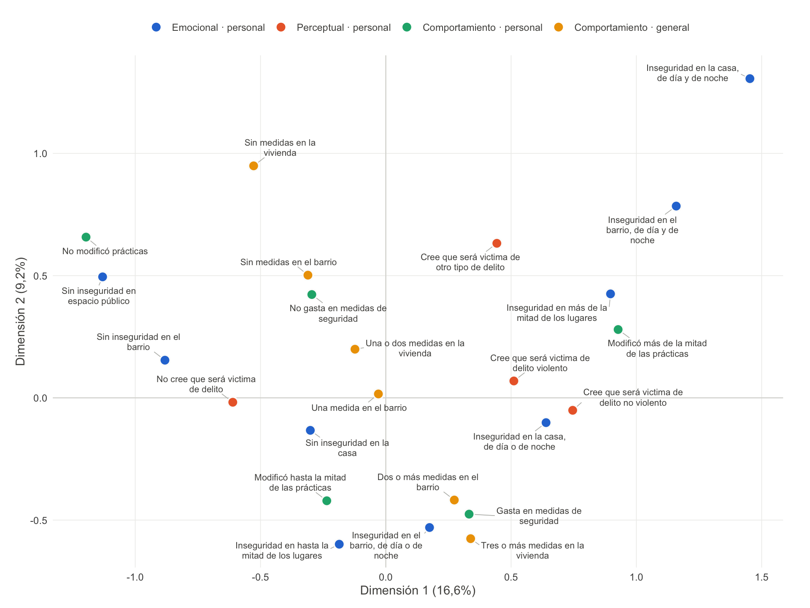
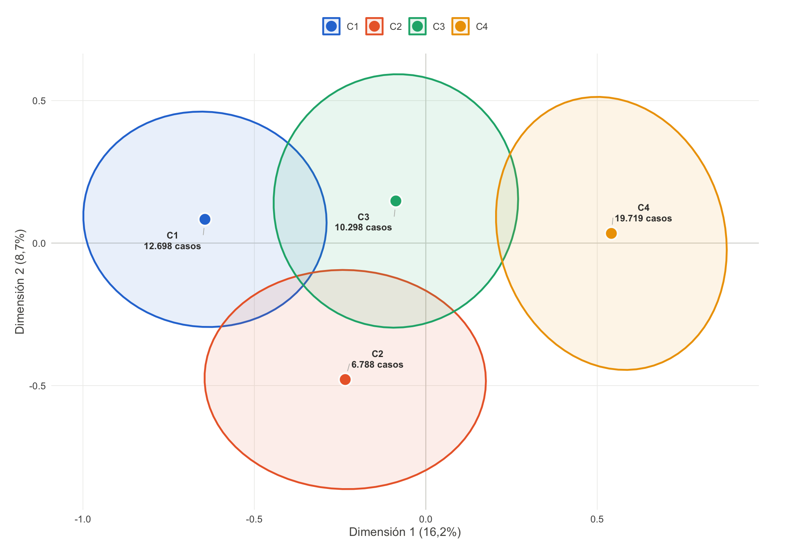
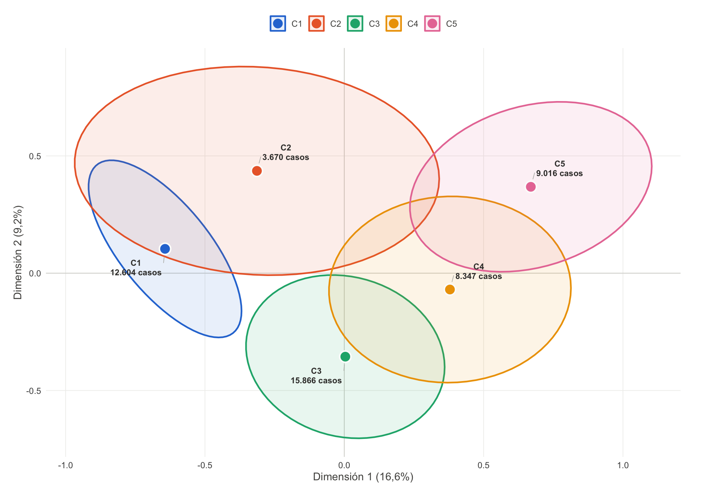
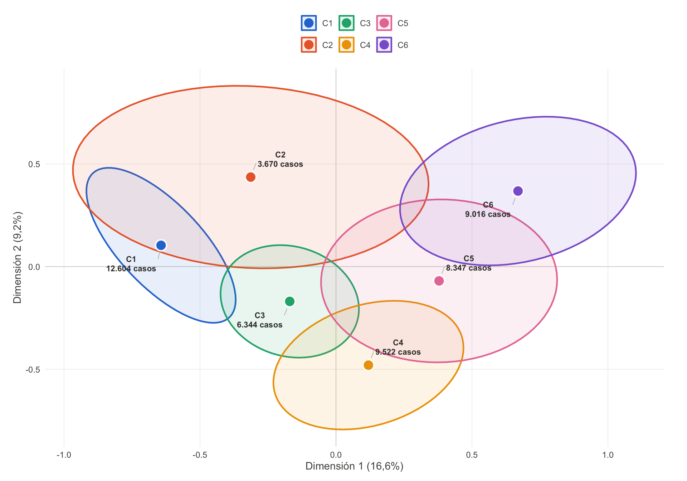

| Dimensión | Autovalor | % de varianza | % acumulado |
|---|---|---|---|
| 1 | 0,324 | 16,2 | 16,2 |
| 2 | 0,175 | 8,7 | 24,9 |
| 3 | 0,158 | 7,9 | 32,8 |
| 4 | 0,139 | 6,9 | 39,8 |
| 5 | 0,130 | 6,5 | 46,3 |
Solución actual
Los grupos: cómo se ven, qué los distingue y cómo se perfilan
AdvertenciaTodo lo de esta página es provisional
La solución de grupos depende de cómo se cortan los índices en categorías, que es una decisión todavía abierta (ver Pipeline). Cuando se resuelva, estas soluciones cambian completas: distinto número de personas por grupo, distinto perfil, posiblemente distinta cantidad de grupos razonable.
Sirven para caracterizar y discutir los grupos. No para citar cifras como definitivas.
El modelo se construye sobre 49.503 casos. Se calcularon tres soluciones (de 4, 6 y 5 grupos) y todas se presentan acá, porque elegir entre ellas también es una decisión pendiente. La que se venía reportando es la de 5 grupos.
Los grupos todavía no tienen nombre: aparecen como C1, C2 y así. Ponerles nombre es tarea del equipo, y las secciones de cada solución son el insumo.
Estructura del modelo
El análisis de correspondencias múltiples es el mismo para las tres soluciones: lo que cambia entre ellas es dónde se corta el árbol de agrupamiento, no el espacio sobre el que se construye.
ImportanteEste porcentaje no sirve para comparar variantes
En un análisis de correspondencias, el % de inercia depende mecánicamente del número de categorías por variable: más categorías producen más inercia total, independientemente de si el modelo es mejor o peor.
Como la decisión abierta sobre categorización cambia justamente el número de categorías, no se puede usar este porcentaje para decidir entre alternativas. Para una comparación válida haría falta la corrección de Benzécri, que no está implementada.
Mapa de categorías
Cada punto es una categoría de respuesta, ubicada según su posición en las dos primeras dimensiones. Las categorías cercanas tienden a darse juntas en las mismas personas; las opuestas se excluyen.

Tip
El color identifica la dimensión teórica, no un orden. La leyenda está siempre presente porque la identidad no puede depender solo del color.
Cómo leer el perfil de un grupo
Para describir un grupo hay que mirar qué respuestas son más frecuentes dentro de él que en el resto de la muestra. El indicador que se usa para eso cambió respecto de los informes anteriores, así que conviene ver los dos lado a lado sobre el mismo caso.
Antes: el v-test
Tomemos una de las respuestas que caracterizan al grupo C1: “Baja inseguridad en la casa”.
El v-test de esa categoría en ese grupo es 35,0. La lectura era: el valor mide a cuántas desviaciones estándar está la frecuencia observada de la que se esperaría si el grupo fuera una muestra al azar del total. Por encima de 2 se considera significativo, y el signo indica si la categoría está sobre o subrepresentada.
Sirve para dos cosas: decidir si vale la pena mirar la categoría, y ordenar las categorías de un grupo por cuánto lo distinguen.
Ahora: la diferencia en puntos porcentuales
La misma categoría, en el mismo grupo:
| Indicador | Valor |
|---|---|
| % dentro del grupo | 46,1% |
| % en el total de la muestra | 33,3% |
| Diferencia | 12,8 puntos porcentuales |
La lectura es directa: 46,1% de las personas del grupo C1 respondió “Baja inseguridad en la casa”, contra 33,3% en el conjunto de la muestra. Son 12,8 puntos porcentuales de diferencia.
Dice lo mismo que el v-test sobre la dirección, pero además dice cuánto, en unidades que se pueden citar en un informe.
Por qué se cambió
Miremos ahora la respuesta que más distingue a C1, que es “Bajas prácticas de evitación”:
| Indicador | Valor |
|---|---|
| v-test | Inf |
| Diferencia | 46,6 puntos porcentuales |
El v-test da Inf, que es lo que devuelve el cálculo cuando la asociación es tan fuerte que el p-valor queda por debajo de la precisión de la máquina. Con el tamaño de muestra de este análisis eso le pasa a más de la mitad de las filas, y todas quedan empatadas en el mismo valor.
El problema no es que el número se vea raro: es que el orden se pierde justamente entre las categorías más distintivas, que son las que sirven para nombrar el grupo. La diferencia en puntos porcentuales no tiene ese límite y por eso es la que ordena las tablas de abajo.
El v-test se conserva como columna en la tabla descargable, para quien quiera contrastarlo con los informes anteriores.
Las soluciones

Cada contorno encierra el 50% central de los casos de su grupo, y el punto marca el centro. Que dos contornos se solapen no significa que los grupos estén mal definidos: la clasificación usa todas las dimensiones del modelo y acá solo se ven dos.
Tamaño de los grupos
| Grupo | Casos | % |
|---|---|---|
| C1 | 2.331.401 | 19,46 |
| C2 | 1.825.777 | 15,24 |
| C3 | 2.477.427 | 20,68 |
| C4 | 5.343.779 | 44,61 |
Qué distingue a cada grupo
Diferencia es cuántos puntos porcentuales más (o menos) frecuente es esa respuesta dentro del grupo que en el total.
| Grupo | Variable | Respuesta | Diferencia (pp) | % en el grupo | % en el total |
|---|---|---|---|---|---|
| C1 | Modificación de prácticas | Bajas prácticas de evitación | 46,6 | 79,2 | 32,7 |
| C1 | Inseguridad en espacio público | Baja inseguridad en espacio publico | 45,0 | 77,5 | 32,5 |
| C1 | Inseguridad en el barrio | Baja inseguridad en el barrio | 37,8 | 70,6 | 32,8 |
| C1 | Expectativa de ser víctima | No cree que será victima de delito | 33,9 | 84,1 | 50,1 |
| C1 | Gasto en seguridad | No gasta en medidas de seguridad | 20,1 | 73,1 | 53,0 |
| C1 | Medidas de la vivienda | Media disposición de medidas vivienda | 14,7 | 48,1 | 33,3 |
| C1 | Medidas del barrio | Baja adopción de medidas comunitarias | 14,1 | 47,3 | 33,1 |
| C1 | Inseguridad en la casa | Baja inseguridad en la casa | 12,8 | 46,1 | 33,3 |
| C1 | Medidas de la vivienda | Baja disposición de medidas vivienda | 11,2 | 44,2 | 33,0 |
| C1 | Inseguridad en la casa | Media inseguridad en la casa | 4,0 | 37,2 | 33,2 |
| C1 | Medidas del barrio | Media adopción de medidas comunitarias | 0,8 | 34,1 | 33,3 |
| C1 | Expectativa de ser víctima | Cree que será victima de otro tipo de delito | -0,1 | 0,0 | 0,1 |
| C1 | Inseguridad en el barrio | Media inseguridad en el barrio | -10,4 | 23,0 | 33,4 |
| C1 | Medidas del barrio | Alta adopción de medidas comunitarias | -14,9 | 18,7 | 33,6 |
| C1 | Expectativa de ser víctima | Cree que será victima de delito no violento | -16,2 | 5,6 | 21,8 |
| C1 | Inseguridad en la casa | Alta inseguridad en la casa | -16,8 | 16,6 | 33,4 |
| C1 | Expectativa de ser víctima | Cree que será victima de delito violento | -17,6 | 10,3 | 27,9 |
| C1 | Inseguridad en espacio público | Media inseguridad en espacio publico | -19,1 | 14,6 | 33,7 |
| C1 | Modificación de prácticas | Medias prácticas de evitación | -19,2 | 14,3 | 33,4 |
| C1 | Gasto en seguridad | Gasta en medidas de seguridad | -20,1 | 26,9 | 47,0 |
| C1 | Inseguridad en espacio público | Alta inseguridad en espacio publico | -25,9 | 7,9 | 33,8 |
| C1 | Medidas de la vivienda | Alta disposición de medidas vivienda | -25,9 | 7,7 | 33,7 |
| C1 | Modificación de prácticas | Altas prácticas de evitación | -27,4 | 6,5 | 33,9 |
| C1 | Inseguridad en el barrio | Alta inseguridad en el barrio | -27,4 | 6,4 | 33,8 |
| C2 | Medidas de la vivienda | Alta disposición de medidas vivienda | 43,2 | 76,8 | 33,7 |
| C2 | Gasto en seguridad | Gasta en medidas de seguridad | 26,9 | 74,0 | 47,0 |
| C2 | Inseguridad en el barrio | Baja inseguridad en el barrio | 26,0 | 58,8 | 32,8 |
| C2 | Expectativa de ser víctima | No cree que será victima de delito | 20,2 | 70,3 | 50,1 |
| C2 | Inseguridad en espacio público | Baja inseguridad en espacio publico | 19,5 | 52,0 | 32,5 |
| C2 | Medidas del barrio | Alta adopción de medidas comunitarias | 18,8 | 52,4 | 33,6 |
| C2 | Inseguridad en la casa | Media inseguridad en la casa | 17,2 | 50,4 | 33,2 |
| C2 | Modificación de prácticas | Bajas prácticas de evitación | 17,0 | 49,7 | 32,7 |
| C2 | Modificación de prácticas | Medias prácticas de evitación | 3,4 | 36,9 | 33,4 |
| C2 | Inseguridad en la casa | Baja inseguridad en la casa | 2,5 | 35,8 | 33,3 |
| C2 | Inseguridad en espacio público | Media inseguridad en espacio publico | 2,2 | 36,0 | 33,7 |
| C2 | Expectativa de ser víctima | Cree que será victima de otro tipo de delito | -0,1 | 0,0 | 0,1 |
| C2 | Medidas del barrio | Media adopción de medidas comunitarias | -1,5 | 31,8 | 33,3 |
| C2 | Expectativa de ser víctima | Cree que será victima de delito no violento | -7,8 | 14,0 | 21,8 |
| C2 | Inseguridad en el barrio | Media inseguridad en el barrio | -9,1 | 24,3 | 33,4 |
| C2 | Expectativa de ser víctima | Cree que será victima de delito violento | -12,3 | 15,6 | 27,9 |
| C2 | Medidas de la vivienda | Baja disposición de medidas vivienda | -15,9 | 17,1 | 33,0 |
| C2 | Inseguridad en el barrio | Alta inseguridad en el barrio | -16,9 | 16,9 | 33,8 |
| C2 | Medidas del barrio | Baja adopción de medidas comunitarias | -17,3 | 15,8 | 33,1 |
| C2 | Inseguridad en la casa | Alta inseguridad en la casa | -19,7 | 13,7 | 33,4 |
| C2 | Modificación de prácticas | Altas prácticas de evitación | -20,4 | 13,5 | 33,9 |
| C2 | Inseguridad en espacio público | Alta inseguridad en espacio publico | -21,8 | 12,0 | 33,8 |
| C2 | Gasto en seguridad | No gasta en medidas de seguridad | -26,9 | 26,0 | 53,0 |
| C2 | Medidas de la vivienda | Media disposición de medidas vivienda | -27,3 | 6,1 | 33,3 |
| C3 | Modificación de prácticas | Medias prácticas de evitación | 33,6 | 67,0 | 33,4 |
| C3 | Inseguridad en espacio público | Media inseguridad en espacio publico | 32,4 | 66,1 | 33,7 |
| C3 | Inseguridad en el barrio | Media inseguridad en el barrio | 26,1 | 59,5 | 33,4 |
| C3 | Medidas de la vivienda | Baja disposición de medidas vivienda | 25,5 | 58,5 | 33,0 |
| C3 | Gasto en seguridad | No gasta en medidas de seguridad | 19,6 | 72,5 | 53,0 |
| C3 | Inseguridad en la casa | Baja inseguridad en la casa | 10,2 | 43,5 | 33,3 |
| C3 | Medidas del barrio | Baja adopción de medidas comunitarias | 8,8 | 42,0 | 33,1 |
| C3 | Inseguridad en la casa | Media inseguridad en la casa | 8,6 | 41,8 | 33,2 |
| C3 | Expectativa de ser víctima | Cree que será victima de delito violento | 6,9 | 34,8 | 27,9 |
| C3 | Expectativa de ser víctima | Cree que será victima de otro tipo de delito | -0,1 | 0,0 | 0,1 |
| C3 | Expectativa de ser víctima | No cree que será victima de delito | -2,2 | 47,9 | 50,1 |
| C3 | Expectativa de ser víctima | Cree que será victima de delito no violento | -4,6 | 17,2 | 21,8 |
| C3 | Medidas del barrio | Alta adopción de medidas comunitarias | -8,1 | 25,5 | 33,6 |
| C3 | Medidas de la vivienda | Media disposición de medidas vivienda | -11,4 | 22,0 | 33,3 |
| C3 | Inseguridad en el barrio | Baja inseguridad en el barrio | -11,7 | 21,1 | 32,8 |
| C3 | Medidas de la vivienda | Alta disposición de medidas vivienda | -14,2 | 19,5 | 33,7 |
| C3 | Inseguridad en el barrio | Alta inseguridad en el barrio | -14,3 | 19,5 | 33,8 |
| C3 | Inseguridad en espacio público | Alta inseguridad en espacio publico | -14,7 | 19,1 | 33,8 |
| C3 | Modificación de prácticas | Altas prácticas de evitación | -14,7 | 19,2 | 33,9 |
| C3 | Inseguridad en espacio público | Baja inseguridad en espacio publico | -17,7 | 14,8 | 32,5 |
| C3 | Inseguridad en la casa | Alta inseguridad en la casa | -18,8 | 14,7 | 33,4 |
| C3 | Modificación de prácticas | Bajas prácticas de evitación | -18,8 | 13,8 | 32,7 |
| C3 | Gasto en seguridad | Gasta en medidas de seguridad | -19,6 | 27,5 | 47,0 |
| C4 | Modificación de prácticas | Altas prácticas de evitación | 32,4 | 66,3 | 33,9 |
| C4 | Inseguridad en espacio público | Alta inseguridad en espacio publico | 31,8 | 65,6 | 33,8 |
| C4 | Inseguridad en el barrio | Alta inseguridad en el barrio | 31,0 | 64,8 | 33,8 |
| C4 | Inseguridad en la casa | Alta inseguridad en la casa | 27,4 | 60,8 | 33,4 |
| C4 | Expectativa de ser víctima | Cree que será victima de delito no violento | 15,6 | 37,4 | 21,8 |
| C4 | Gasto en seguridad | Gasta en medidas de seguridad | 13,9 | 61,0 | 47,0 |
| C4 | Expectativa de ser víctima | Cree que será victima de delito violento | 11,9 | 39,8 | 27,9 |
| C4 | Medidas de la vivienda | Alta disposición de medidas vivienda | 9,2 | 42,9 | 33,7 |
| C4 | Medidas del barrio | Alta adopción de medidas comunitarias | 7,3 | 40,9 | 33,6 |
| C4 | Medidas de la vivienda | Media disposición de medidas vivienda | 5,8 | 39,2 | 33,3 |
| C4 | Expectativa de ser víctima | Cree que será victima de otro tipo de delito | 0,2 | 0,4 | 0,1 |
| C4 | Inseguridad en el barrio | Media inseguridad en el barrio | -3,8 | 29,6 | 33,4 |
| C4 | Inseguridad en espacio público | Media inseguridad en espacio publico | -5,4 | 28,4 | 33,7 |
| C4 | Modificación de prácticas | Medias prácticas de evitación | -6,4 | 27,0 | 33,4 |
| C4 | Medidas del barrio | Baja adopción de medidas comunitarias | -7,7 | 25,4 | 33,1 |
| C4 | Inseguridad en la casa | Media inseguridad en la casa | -13,0 | 20,3 | 33,2 |
| C4 | Gasto en seguridad | No gasta en medidas de seguridad | -13,9 | 39,0 | 53,0 |
| C4 | Inseguridad en la casa | Baja inseguridad en la casa | -14,4 | 18,9 | 33,3 |
| C4 | Medidas de la vivienda | Baja disposición de medidas vivienda | -15,1 | 17,9 | 33,0 |
| C4 | Modificación de prácticas | Bajas prácticas de evitación | -26,0 | 6,7 | 32,7 |
| C4 | Inseguridad en espacio público | Baja inseguridad en espacio publico | -26,5 | 6,0 | 32,5 |
| C4 | Inseguridad en el barrio | Baja inseguridad en el barrio | -27,2 | 5,6 | 32,8 |
| C4 | Expectativa de ser víctima | No cree que será victima de delito | -27,7 | 22,4 | 50,1 |
Perfil de los grupos
Cada columna suma 100% dentro de cada bloque de variable. Se lee por filas: comparando una fila entre columnas se ve qué grupos concentran esa respuesta.
| Variable | Categoría | C1 | C2 | C3 | C4 |
|---|---|---|---|---|---|
| Percepción de desórdenes | Baja percepción de desordenes | 40,7 | 31,2 | 23,2 | 15,0 |
| Media percepción de desordenes | 35,5 | 36,0 | 34,3 | 29,8 | |
| Alta percepción de desordenes | 23,8 | 32,8 | 42,5 | 55,2 | |
| Macrozona | Zona norte | 14,6 | 9,6 | 16,6 | 11,8 |
| Zona centro | 37,2 | 29,4 | 29,9 | 28,4 | |
| Zona sur | 13,1 | 5,2 | 6,9 | 3,8 | |
| Zona metropolitana | 35,2 | 55,9 | 46,5 | 56,0 | |
| Percepción de incivilidades | Baja percepción de incivilidades | 44,8 | 31,5 | 23,9 | 11,5 |
| Media percepción de incivilidades | 35,4 | 38,6 | 36,2 | 30,6 | |
| Alta percepción de incivilidades | 19,9 | 30,0 | 39,8 | 58,0 | |
| Se informa por experiencia personal | No se informa por experiencia personal | 75,9 | 78,9 | 77,0 | 76,3 |
| Se informa por experiencia personal | 23,8 | 21,0 | 22,9 | 23,7 | |
| No sabe | 0,2 | 0,1 | 0,1 | 0,0 | |
| No responde | 0,0 | 0,0 | 0,0 | 0,0 | |
| Se informa por otras personas | No se informa por otras personas | 43,0 | 45,3 | 41,9 | 41,5 |
| Se informa por otras personas | 56,8 | 54,6 | 58,1 | 58,5 | |
| No sabe | 0,2 | 0,1 | 0,1 | 0,0 | |
| No responde | 0,0 | 0,0 | 0,0 | 0,0 | |
| Se informa por prensa | No se informa por prensa | 41,9 | 40,7 | 39,7 | 37,3 |
| Se informa por prensa | 57,9 | 59,1 | 60,2 | 62,7 | |
| No sabe | 0,2 | 0,1 | 0,1 | 0,0 | |
| No responde | 0,0 | 0,0 | 0,0 | 0,0 | |
| Se informa por redes sociales | No se informa por RRSS | 42,2 | 41,2 | 39,2 | 42,8 |
| Se informa por RRSS | 57,6 | 58,7 | 60,8 | 57,2 | |
| No sabe | 0,2 | 0,1 | 0,1 | 0,0 | |
| No responde | 0,0 | 0,0 | 0,0 | 0,0 | |
| Se informa por televisión | No se informa por noticias | 53,7 | 55,1 | 51,0 | 48,1 |
| Se informa por noticias | 46,0 | 44,7 | 48,9 | 51,9 | |
| No sabe | 0,2 | 0,1 | 0,1 | 0,0 | |
| No responde | 0,0 | 0,0 | 0,0 | 0,0 | |
| Tramo de edad | 0 a 29 años | 28,8 | 29,4 | 30,0 | 19,3 |
| 30 a 59 años | 46,4 | 51,9 | 49,3 | 58,5 | |
| 60 años o más | 24,7 | 18,7 | 20,7 | 22,2 | |
| Nivel educacional | Educación básica o menos | 15,5 | 7,8 | 11,8 | 10,6 |
| Educación secundaria | 44,3 | 35,3 | 44,8 | 41,0 | |
| Educación terciaria | 39,8 | 56,7 | 43,0 | 48,1 | |
| Sin dato | 0,3 | 0,2 | 0,3 | 0,2 | |
| Nivel ignorado | 0,2 | 0,0 | 0,2 | 0,1 | |
| Nivel socioeconómico | Bajo | 47,1 | 28,9 | 45,1 | 39,7 |
| Medio | 36,9 | 39,9 | 38,7 | 42,3 | |
| Alto | 16,0 | 31,2 | 16,2 | 18,1 | |
| Sexo | Hombre | 61,0 | 57,5 | 49,1 | 41,0 |
| Mujer | 39,0 | 42,5 | 50,9 | 59,0 | |
| Victimización (delitos contra las personas) | No | 84,3 | 76,0 | 72,4 | 66,7 |
| Sí | 15,7 | 24,0 | 27,6 | 33,3 | |
| Victimización (delitos violentos) | No | 97,1 | 96,5 | 94,4 | 93,0 |
| Sí | 2,9 | 3,5 | 5,6 | 7,0 | |
| Medidas del barrio | Baja adopción de medidas comunitarias | 39,9 | 11,9 | 36,3 | 21,3 |
| Media adopción de medidas comunitarias | 35,4 | 29,8 | 33,9 | 32,5 | |
| Alta adopción de medidas comunitarias | 24,8 | 58,2 | 29,8 | 46,2 | |
| Medidas de la vivienda | Baja disposición de medidas vivienda | 38,3 | 15,3 | 52,1 | 16,6 |
| Media disposición de medidas vivienda | 52,3 | 5,6 | 24,4 | 37,8 | |
| Alta disposición de medidas vivienda | 9,4 | 79,1 | 23,5 | 45,6 | |
| Gasto en seguridad | No gasta en medidas de seguridad | 70,4 | 24,6 | 69,3 | 36,2 |
| Gasta en medidas de seguridad | 29,6 | 75,4 | 30,7 | 63,8 | |
| Modificación de prácticas | Bajas prácticas de evitación | 77,6 | 48,7 | 13,2 | 6,3 |
| Medias prácticas de evitación | 15,3 | 38,5 | 66,8 | 25,6 | |
| Altas prácticas de evitación | 7,1 | 12,8 | 20,0 | 68,1 | |
| Inseguridad en el barrio | Baja inseguridad en el barrio | 69,7 | 56,1 | 17,7 | 5,0 |
| Media inseguridad en el barrio | 23,0 | 24,9 | 62,4 | 27,1 | |
| Alta inseguridad en el barrio | 7,3 | 19,0 | 19,9 | 67,8 | |
| Inseguridad en la casa | Baja inseguridad en la casa | 47,8 | 35,2 | 48,3 | 22,1 |
| Media inseguridad en la casa | 38,1 | 52,6 | 39,7 | 22,7 | |
| Alta inseguridad en la casa | 14,0 | 12,2 | 12,1 | 55,2 | |
| Inseguridad en espacio público | Baja inseguridad en espacio publico | 75,5 | 50,4 | 13,3 | 5,2 |
| Media inseguridad en espacio publico | 16,1 | 38,4 | 68,5 | 29,2 | |
| Alta inseguridad en espacio publico | 8,4 | 11,2 | 18,2 | 65,6 | |
| Expectativa de ser víctima | No cree que será victima de delito | 82,2 | 67,6 | 45,2 | 20,5 |
| Cree que será victima de delito no violento | 5,6 | 14,2 | 17,6 | 38,1 | |
| Cree que será victima de delito violento | 12,2 | 18,2 | 37,3 | 41,1 | |
| Cree que será victima de otro tipo de delito | 0,0 | 0,0 | 0,0 | 0,3 |
Es la solución que se venía reportando. La marca no significa que sea la mejor: significa que es la que está en los informes previos.

Cada contorno encierra el 50% central de los casos de su grupo, y el punto marca el centro. Que dos contornos se solapen no significa que los grupos estén mal definidos: la clasificación usa todas las dimensiones del modelo y acá solo se ven dos.
Tamaño de los grupos
| Grupo | Casos | % |
|---|---|---|
| C1 | 2.331.401 | 19,46 |
| C2 | 1.825.777 | 15,24 |
| C3 | 2.477.427 | 20,68 |
| C4 | 2.545.515 | 21,25 |
| C5 | 2.798.264 | 23,36 |
Qué distingue a cada grupo
Diferencia es cuántos puntos porcentuales más (o menos) frecuente es esa respuesta dentro del grupo que en el total.
| Grupo | Variable | Respuesta | Diferencia (pp) | % en el grupo | % en el total |
|---|---|---|---|---|---|
| C1 | Modificación de prácticas | Bajas prácticas de evitación | 46,6 | 79,2 | 32,7 |
| C1 | Inseguridad en espacio público | Baja inseguridad en espacio publico | 45,0 | 77,5 | 32,5 |
| C1 | Inseguridad en el barrio | Baja inseguridad en el barrio | 37,8 | 70,6 | 32,8 |
| C1 | Expectativa de ser víctima | No cree que será victima de delito | 33,9 | 84,1 | 50,1 |
| C1 | Gasto en seguridad | No gasta en medidas de seguridad | 20,1 | 73,1 | 53,0 |
| C1 | Medidas de la vivienda | Media disposición de medidas vivienda | 14,7 | 48,1 | 33,3 |
| C1 | Medidas del barrio | Baja adopción de medidas comunitarias | 14,1 | 47,3 | 33,1 |
| C1 | Inseguridad en la casa | Baja inseguridad en la casa | 12,8 | 46,1 | 33,3 |
| C1 | Medidas de la vivienda | Baja disposición de medidas vivienda | 11,2 | 44,2 | 33,0 |
| C1 | Inseguridad en la casa | Media inseguridad en la casa | 4,0 | 37,2 | 33,2 |
| C1 | Medidas del barrio | Media adopción de medidas comunitarias | 0,8 | 34,1 | 33,3 |
| C1 | Expectativa de ser víctima | Cree que será victima de otro tipo de delito | -0,1 | 0,0 | 0,1 |
| C1 | Inseguridad en el barrio | Media inseguridad en el barrio | -10,4 | 23,0 | 33,4 |
| C1 | Medidas del barrio | Alta adopción de medidas comunitarias | -14,9 | 18,7 | 33,6 |
| C1 | Expectativa de ser víctima | Cree que será victima de delito no violento | -16,2 | 5,6 | 21,8 |
| C1 | Inseguridad en la casa | Alta inseguridad en la casa | -16,8 | 16,6 | 33,4 |
| C1 | Expectativa de ser víctima | Cree que será victima de delito violento | -17,6 | 10,3 | 27,9 |
| C1 | Inseguridad en espacio público | Media inseguridad en espacio publico | -19,1 | 14,6 | 33,7 |
| C1 | Modificación de prácticas | Medias prácticas de evitación | -19,2 | 14,3 | 33,4 |
| C1 | Gasto en seguridad | Gasta en medidas de seguridad | -20,1 | 26,9 | 47,0 |
| C1 | Inseguridad en espacio público | Alta inseguridad en espacio publico | -25,9 | 7,9 | 33,8 |
| C1 | Medidas de la vivienda | Alta disposición de medidas vivienda | -25,9 | 7,7 | 33,7 |
| C1 | Modificación de prácticas | Altas prácticas de evitación | -27,4 | 6,5 | 33,9 |
| C1 | Inseguridad en el barrio | Alta inseguridad en el barrio | -27,4 | 6,4 | 33,8 |
| C2 | Medidas de la vivienda | Alta disposición de medidas vivienda | 43,2 | 76,8 | 33,7 |
| C2 | Gasto en seguridad | Gasta en medidas de seguridad | 26,9 | 74,0 | 47,0 |
| C2 | Inseguridad en el barrio | Baja inseguridad en el barrio | 26,0 | 58,8 | 32,8 |
| C2 | Expectativa de ser víctima | No cree que será victima de delito | 20,2 | 70,3 | 50,1 |
| C2 | Inseguridad en espacio público | Baja inseguridad en espacio publico | 19,5 | 52,0 | 32,5 |
| C2 | Medidas del barrio | Alta adopción de medidas comunitarias | 18,8 | 52,4 | 33,6 |
| C2 | Inseguridad en la casa | Media inseguridad en la casa | 17,2 | 50,4 | 33,2 |
| C2 | Modificación de prácticas | Bajas prácticas de evitación | 17,0 | 49,7 | 32,7 |
| C2 | Modificación de prácticas | Medias prácticas de evitación | 3,4 | 36,9 | 33,4 |
| C2 | Inseguridad en la casa | Baja inseguridad en la casa | 2,5 | 35,8 | 33,3 |
| C2 | Inseguridad en espacio público | Media inseguridad en espacio publico | 2,2 | 36,0 | 33,7 |
| C2 | Expectativa de ser víctima | Cree que será victima de otro tipo de delito | -0,1 | 0,0 | 0,1 |
| C2 | Medidas del barrio | Media adopción de medidas comunitarias | -1,5 | 31,8 | 33,3 |
| C2 | Expectativa de ser víctima | Cree que será victima de delito no violento | -7,8 | 14,0 | 21,8 |
| C2 | Inseguridad en el barrio | Media inseguridad en el barrio | -9,1 | 24,3 | 33,4 |
| C2 | Expectativa de ser víctima | Cree que será victima de delito violento | -12,3 | 15,6 | 27,9 |
| C2 | Medidas de la vivienda | Baja disposición de medidas vivienda | -15,9 | 17,1 | 33,0 |
| C2 | Inseguridad en el barrio | Alta inseguridad en el barrio | -16,9 | 16,9 | 33,8 |
| C2 | Medidas del barrio | Baja adopción de medidas comunitarias | -17,3 | 15,8 | 33,1 |
| C2 | Inseguridad en la casa | Alta inseguridad en la casa | -19,7 | 13,7 | 33,4 |
| C2 | Modificación de prácticas | Altas prácticas de evitación | -20,4 | 13,5 | 33,9 |
| C2 | Inseguridad en espacio público | Alta inseguridad en espacio publico | -21,8 | 12,0 | 33,8 |
| C2 | Gasto en seguridad | No gasta en medidas de seguridad | -26,9 | 26,0 | 53,0 |
| C2 | Medidas de la vivienda | Media disposición de medidas vivienda | -27,3 | 6,1 | 33,3 |
| C3 | Modificación de prácticas | Medias prácticas de evitación | 33,6 | 67,0 | 33,4 |
| C3 | Inseguridad en espacio público | Media inseguridad en espacio publico | 32,4 | 66,1 | 33,7 |
| C3 | Inseguridad en el barrio | Media inseguridad en el barrio | 26,1 | 59,5 | 33,4 |
| C3 | Medidas de la vivienda | Baja disposición de medidas vivienda | 25,5 | 58,5 | 33,0 |
| C3 | Gasto en seguridad | No gasta en medidas de seguridad | 19,6 | 72,5 | 53,0 |
| C3 | Inseguridad en la casa | Baja inseguridad en la casa | 10,2 | 43,5 | 33,3 |
| C3 | Medidas del barrio | Baja adopción de medidas comunitarias | 8,8 | 42,0 | 33,1 |
| C3 | Inseguridad en la casa | Media inseguridad en la casa | 8,6 | 41,8 | 33,2 |
| C3 | Expectativa de ser víctima | Cree que será victima de delito violento | 6,9 | 34,8 | 27,9 |
| C3 | Expectativa de ser víctima | Cree que será victima de otro tipo de delito | -0,1 | 0,0 | 0,1 |
| C3 | Expectativa de ser víctima | No cree que será victima de delito | -2,2 | 47,9 | 50,1 |
| C3 | Expectativa de ser víctima | Cree que será victima de delito no violento | -4,6 | 17,2 | 21,8 |
| C3 | Medidas del barrio | Alta adopción de medidas comunitarias | -8,1 | 25,5 | 33,6 |
| C3 | Medidas de la vivienda | Media disposición de medidas vivienda | -11,4 | 22,0 | 33,3 |
| C3 | Inseguridad en el barrio | Baja inseguridad en el barrio | -11,7 | 21,1 | 32,8 |
| C3 | Medidas de la vivienda | Alta disposición de medidas vivienda | -14,2 | 19,5 | 33,7 |
| C3 | Inseguridad en el barrio | Alta inseguridad en el barrio | -14,3 | 19,5 | 33,8 |
| C3 | Inseguridad en espacio público | Alta inseguridad en espacio publico | -14,7 | 19,1 | 33,8 |
| C3 | Modificación de prácticas | Altas prácticas de evitación | -14,7 | 19,2 | 33,9 |
| C3 | Inseguridad en espacio público | Baja inseguridad en espacio publico | -17,7 | 14,8 | 32,5 |
| C3 | Inseguridad en la casa | Alta inseguridad en la casa | -18,8 | 14,7 | 33,4 |
| C3 | Modificación de prácticas | Bajas prácticas de evitación | -18,8 | 13,8 | 32,7 |
| C3 | Gasto en seguridad | Gasta en medidas de seguridad | -19,6 | 27,5 | 47,0 |
| C4 | Medidas de la vivienda | Media disposición de medidas vivienda | 40,6 | 73,9 | 33,3 |
| C4 | Inseguridad en la casa | Alta inseguridad en la casa | 34,7 | 68,2 | 33,4 |
| C4 | Inseguridad en el barrio | Alta inseguridad en el barrio | 33,0 | 66,8 | 33,8 |
| C4 | Inseguridad en espacio público | Alta inseguridad en espacio publico | 20,8 | 54,6 | 33,8 |
| C4 | Modificación de prácticas | Altas prácticas de evitación | 18,8 | 52,7 | 33,9 |
| C4 | Expectativa de ser víctima | Cree que será victima de delito violento | 18,0 | 45,9 | 27,9 |
| C4 | Modificación de prácticas | Medias prácticas de evitación | 6,4 | 39,8 | 33,4 |
| C4 | Expectativa de ser víctima | Cree que será victima de delito no violento | 4,9 | 26,7 | 21,8 |
| C4 | Gasto en seguridad | Gasta en medidas de seguridad | 4,7 | 51,7 | 47,0 |
| C4 | Inseguridad en espacio público | Media inseguridad en espacio publico | 4,6 | 38,4 | 33,7 |
| C4 | Medidas del barrio | Media adopción de medidas comunitarias | 1,4 | 34,7 | 33,3 |
| C4 | Medidas del barrio | Alta adopción de medidas comunitarias | 1,1 | 34,6 | 33,6 |
| C4 | Expectativa de ser víctima | Cree que será victima de otro tipo de delito | -0,1 | 0,0 | 0,1 |
| C4 | Medidas del barrio | Baja adopción de medidas comunitarias | -2,4 | 30,7 | 33,1 |
| C4 | Gasto en seguridad | No gasta en medidas de seguridad | -4,7 | 48,3 | 53,0 |
| C4 | Inseguridad en el barrio | Media inseguridad en el barrio | -5,0 | 28,4 | 33,4 |
| C4 | Inseguridad en la casa | Media inseguridad en la casa | -15,3 | 17,9 | 33,2 |
| C4 | Medidas de la vivienda | Alta disposición de medidas vivienda | -15,4 | 18,2 | 33,7 |
| C4 | Inseguridad en la casa | Baja inseguridad en la casa | -19,4 | 13,9 | 33,3 |
| C4 | Expectativa de ser víctima | No cree que será victima de delito | -22,7 | 27,4 | 50,1 |
| C4 | Medidas de la vivienda | Baja disposición de medidas vivienda | -25,2 | 7,9 | 33,0 |
| C4 | Modificación de prácticas | Bajas prácticas de evitación | -25,2 | 7,5 | 32,7 |
| C4 | Inseguridad en espacio público | Baja inseguridad en espacio publico | -25,5 | 7,0 | 32,5 |
| C4 | Inseguridad en el barrio | Baja inseguridad en el barrio | -27,9 | 4,8 | 32,8 |
| C5 | Modificación de prácticas | Altas prácticas de evitación | 45,7 | 79,6 | 33,9 |
| C5 | Inseguridad en espacio público | Alta inseguridad en espacio publico | 42,6 | 76,4 | 33,8 |
| C5 | Medidas de la vivienda | Alta disposición de medidas vivienda | 33,4 | 67,0 | 33,7 |
| C5 | Inseguridad en el barrio | Alta inseguridad en el barrio | 29,0 | 62,8 | 33,8 |
| C5 | Expectativa de ser víctima | Cree que será victima de delito no violento | 26,0 | 47,8 | 21,8 |
| C5 | Gasto en seguridad | Gasta en medidas de seguridad | 23,0 | 70,0 | 47,0 |
| C5 | Inseguridad en la casa | Alta inseguridad en la casa | 20,2 | 53,7 | 33,4 |
| C5 | Medidas del barrio | Alta adopción de medidas comunitarias | 13,5 | 47,0 | 33,6 |
| C5 | Expectativa de ser víctima | Cree que será victima de delito violento | 6,0 | 33,9 | 27,9 |
| C5 | Expectativa de ser víctima | Cree que será victima de otro tipo de delito | 0,6 | 0,7 | 0,1 |
| C5 | Inseguridad en el barrio | Media inseguridad en el barrio | -2,6 | 30,8 | 33,4 |
| C5 | Medidas de la vivienda | Baja disposición de medidas vivienda | -5,2 | 27,8 | 33,0 |
| C5 | Inseguridad en la casa | Baja inseguridad en la casa | -9,5 | 23,8 | 33,3 |
| C5 | Inseguridad en la casa | Media inseguridad en la casa | -10,7 | 22,5 | 33,2 |
| C5 | Medidas del barrio | Baja adopción de medidas comunitarias | -12,9 | 20,2 | 33,1 |
| C5 | Inseguridad en espacio público | Media inseguridad en espacio publico | -15,2 | 18,6 | 33,7 |
| C5 | Modificación de prácticas | Medias prácticas de evitación | -18,9 | 14,5 | 33,4 |
| C5 | Gasto en seguridad | No gasta en medidas de seguridad | -23,0 | 30,0 | 53,0 |
| C5 | Inseguridad en el barrio | Baja inseguridad en el barrio | -26,5 | 6,3 | 32,8 |
| C5 | Modificación de prácticas | Bajas prácticas de evitación | -26,8 | 5,9 | 32,7 |
| C5 | Inseguridad en espacio público | Baja inseguridad en espacio publico | -27,5 | 5,0 | 32,5 |
| C5 | Medidas de la vivienda | Media disposición de medidas vivienda | -28,2 | 5,1 | 33,3 |
| C5 | Expectativa de ser víctima | No cree que será victima de delito | -32,6 | 17,6 | 50,1 |
Perfil de los grupos
Cada columna suma 100% dentro de cada bloque de variable. Se lee por filas: comparando una fila entre columnas se ve qué grupos concentran esa respuesta.
| Variable | Categoría | C1 | C2 | C3 | C4 | C5 |
|---|---|---|---|---|---|---|
| Percepción de desórdenes | Baja percepción de desordenes | 40,7 | 31,2 | 23,2 | 15,1 | 14,9 |
| Media percepción de desordenes | 35,5 | 36,0 | 34,3 | 31,3 | 28,5 | |
| Alta percepción de desordenes | 23,8 | 32,8 | 42,5 | 53,6 | 56,6 | |
| Macrozona | Zona norte | 14,6 | 9,6 | 16,6 | 12,8 | 11,0 |
| Zona centro | 37,2 | 29,4 | 29,9 | 29,4 | 27,6 | |
| Zona sur | 13,1 | 5,2 | 6,9 | 4,5 | 3,1 | |
| Zona metropolitana | 35,2 | 55,9 | 46,5 | 53,3 | 58,4 | |
| Percepción de incivilidades | Baja percepción de incivilidades | 44,8 | 31,5 | 23,9 | 12,6 | 10,5 |
| Media percepción de incivilidades | 35,4 | 38,6 | 36,2 | 31,7 | 29,5 | |
| Alta percepción de incivilidades | 19,9 | 30,0 | 39,8 | 55,7 | 60,0 | |
| Se informa por experiencia personal | No se informa por experiencia personal | 75,9 | 78,9 | 77,0 | 76,7 | 76,0 |
| Se informa por experiencia personal | 23,8 | 21,0 | 22,9 | 23,3 | 24,0 | |
| No sabe | 0,2 | 0,1 | 0,1 | 0,0 | 0,0 | |
| No responde | 0,0 | 0,0 | 0,0 | 0,0 | 0,0 | |
| Se informa por otras personas | No se informa por otras personas | 43,0 | 45,3 | 41,9 | 40,0 | 42,8 |
| Se informa por otras personas | 56,8 | 54,6 | 58,1 | 60,0 | 57,1 | |
| No sabe | 0,2 | 0,1 | 0,1 | 0,0 | 0,0 | |
| No responde | 0,0 | 0,0 | 0,0 | 0,0 | 0,0 | |
| Se informa por prensa | No se informa por prensa | 41,9 | 40,7 | 39,7 | 37,9 | 36,8 |
| Se informa por prensa | 57,9 | 59,1 | 60,2 | 62,1 | 63,2 | |
| No sabe | 0,2 | 0,1 | 0,1 | 0,0 | 0,0 | |
| No responde | 0,0 | 0,0 | 0,0 | 0,0 | 0,0 | |
| Se informa por redes sociales | No se informa por RRSS | 42,2 | 41,2 | 39,2 | 42,6 | 43,0 |
| Se informa por RRSS | 57,6 | 58,7 | 60,8 | 57,4 | 57,0 | |
| No sabe | 0,2 | 0,1 | 0,1 | 0,0 | 0,0 | |
| No responde | 0,0 | 0,0 | 0,0 | 0,0 | 0,0 | |
| Se informa por televisión | No se informa por noticias | 53,7 | 55,1 | 51,0 | 48,0 | 48,2 |
| Se informa por noticias | 46,0 | 44,7 | 48,9 | 52,0 | 51,8 | |
| No sabe | 0,2 | 0,1 | 0,1 | 0,0 | 0,0 | |
| No responde | 0,0 | 0,0 | 0,0 | 0,0 | 0,0 | |
| Tramo de edad | 0 a 29 años | 28,8 | 29,4 | 30,0 | 22,4 | 16,5 |
| 30 a 59 años | 46,4 | 51,9 | 49,3 | 54,4 | 62,2 | |
| 60 años o más | 24,7 | 18,7 | 20,7 | 23,2 | 21,3 | |
| Nivel educacional | Educación básica o menos | 15,5 | 7,8 | 11,8 | 12,4 | 8,9 |
| Educación secundaria | 44,3 | 35,3 | 44,8 | 43,4 | 38,8 | |
| Educación terciaria | 39,8 | 56,7 | 43,0 | 43,7 | 52,1 | |
| Sin dato | 0,3 | 0,2 | 0,3 | 0,3 | 0,1 | |
| Nivel ignorado | 0,2 | 0,0 | 0,2 | 0,2 | 0,1 | |
| Nivel socioeconómico | Bajo | 47,1 | 28,9 | 45,1 | 44,9 | 34,9 |
| Medio | 36,9 | 39,9 | 38,7 | 40,8 | 43,6 | |
| Alto | 16,0 | 31,2 | 16,2 | 14,3 | 21,5 | |
| Sexo | Hombre | 61,0 | 57,5 | 49,1 | 41,0 | 41,1 |
| Mujer | 39,0 | 42,5 | 50,9 | 59,0 | 58,9 | |
| Victimización (delitos contra las personas) | No | 84,3 | 76,0 | 72,4 | 68,3 | 65,2 |
| Sí | 15,7 | 24,0 | 27,6 | 31,7 | 34,8 | |
| Victimización (delitos violentos) | No | 97,1 | 96,5 | 94,4 | 93,5 | 92,6 |
| Sí | 2,9 | 3,5 | 5,6 | 6,5 | 7,4 | |
| Medidas del barrio | Baja adopción de medidas comunitarias | 39,9 | 11,9 | 36,3 | 26,6 | 16,6 |
| Media adopción de medidas comunitarias | 35,4 | 29,8 | 33,9 | 33,8 | 31,3 | |
| Alta adopción de medidas comunitarias | 24,8 | 58,2 | 29,8 | 39,6 | 52,1 | |
| Medidas de la vivienda | Baja disposición de medidas vivienda | 38,3 | 15,3 | 52,1 | 7,6 | 24,8 |
| Media disposición de medidas vivienda | 52,3 | 5,6 | 24,4 | 73,0 | 5,6 | |
| Alta disposición de medidas vivienda | 9,4 | 79,1 | 23,5 | 19,3 | 69,5 | |
| Gasto en seguridad | No gasta en medidas de seguridad | 70,4 | 24,6 | 69,3 | 46,3 | 26,9 |
| Gasta en medidas de seguridad | 29,6 | 75,4 | 30,7 | 53,7 | 73,1 | |
| Modificación de prácticas | Bajas prácticas de evitación | 77,6 | 48,7 | 13,2 | 7,0 | 5,7 |
| Medias prácticas de evitación | 15,3 | 38,5 | 66,8 | 38,1 | 14,1 | |
| Altas prácticas de evitación | 7,1 | 12,8 | 20,0 | 54,9 | 80,1 | |
| Inseguridad en el barrio | Baja inseguridad en el barrio | 69,7 | 56,1 | 17,7 | 4,1 | 5,8 |
| Media inseguridad en el barrio | 23,0 | 24,9 | 62,4 | 26,1 | 28,0 | |
| Alta inseguridad en el barrio | 7,3 | 19,0 | 19,9 | 69,8 | 66,1 | |
| Inseguridad en la casa | Baja inseguridad en la casa | 47,8 | 35,2 | 48,3 | 16,5 | 27,3 |
| Media inseguridad en la casa | 38,1 | 52,6 | 39,7 | 20,4 | 24,7 | |
| Alta inseguridad en la casa | 14,0 | 12,2 | 12,1 | 63,1 | 48,0 | |
| Inseguridad en espacio público | Baja inseguridad en espacio publico | 75,5 | 50,4 | 13,3 | 5,8 | 4,6 |
| Media inseguridad en espacio publico | 16,1 | 38,4 | 68,5 | 39,5 | 19,8 | |
| Alta inseguridad en espacio publico | 8,4 | 11,2 | 18,2 | 54,7 | 75,5 | |
| Expectativa de ser víctima | No cree que será victima de delito | 82,2 | 67,6 | 45,2 | 25,1 | 16,4 |
| Cree que será victima de delito no violento | 5,6 | 14,2 | 17,6 | 26,5 | 48,7 | |
| Cree que será victima de delito violento | 12,2 | 18,2 | 37,3 | 48,5 | 34,3 | |
| Cree que será victima de otro tipo de delito | 0,0 | 0,0 | 0,0 | 0,0 | 0,6 |

Cada contorno encierra el 50% central de los casos de su grupo, y el punto marca el centro. Que dos contornos se solapen no significa que los grupos estén mal definidos: la clasificación usa todas las dimensiones del modelo y acá solo se ven dos.
Tamaño de los grupos
| Grupo | Casos | % |
|---|---|---|
| C1 | 1.101.373 | 9,19 |
| C2 | 1.230.028 | 10,27 |
| C3 | 1.825.777 | 15,24 |
| C4 | 2.477.427 | 20,68 |
| C5 | 2.545.515 | 21,25 |
| C6 | 2.798.264 | 23,36 |
Qué distingue a cada grupo
Diferencia es cuántos puntos porcentuales más (o menos) frecuente es esa respuesta dentro del grupo que en el total.
| Grupo | Variable | Respuesta | Diferencia (pp) | % en el grupo | % en el total |
|---|---|---|---|---|---|
| C1 | Medidas de la vivienda | Baja disposición de medidas vivienda | 52,0 | 85,0 | 33,0 |
| C1 | Modificación de prácticas | Bajas prácticas de evitación | 51,1 | 83,8 | 32,7 |
| C1 | Inseguridad en espacio público | Baja inseguridad en espacio publico | 47,9 | 80,3 | 32,5 |
| C1 | Inseguridad en el barrio | Baja inseguridad en el barrio | 43,8 | 76,6 | 32,8 |
| C1 | Gasto en seguridad | No gasta en medidas de seguridad | 34,6 | 87,5 | 53,0 |
| C1 | Expectativa de ser víctima | No cree que será victima de delito | 33,0 | 83,2 | 50,1 |
| C1 | Medidas del barrio | Baja adopción de medidas comunitarias | 22,4 | 55,5 | 33,1 |
| C1 | Inseguridad en la casa | Baja inseguridad en la casa | 15,1 | 48,5 | 33,3 |
| C1 | Inseguridad en la casa | Media inseguridad en la casa | 5,9 | 39,1 | 33,2 |
| C1 | Expectativa de ser víctima | Cree que será victima de otro tipo de delito | -0,1 | 0,0 | 0,1 |
| C1 | Medidas del barrio | Media adopción de medidas comunitarias | -3,5 | 29,7 | 33,3 |
| C1 | Expectativa de ser víctima | Cree que será victima de delito no violento | -15,0 | 6,8 | 21,8 |
| C1 | Inseguridad en el barrio | Media inseguridad en el barrio | -15,9 | 17,5 | 33,4 |
| C1 | Expectativa de ser víctima | Cree que será victima de delito violento | -17,9 | 10,0 | 27,9 |
| C1 | Medidas del barrio | Alta adopción de medidas comunitarias | -18,8 | 14,7 | 33,6 |
| C1 | Medidas de la vivienda | Alta disposición de medidas vivienda | -19,8 | 13,9 | 33,7 |
| C1 | Inseguridad en la casa | Alta inseguridad en la casa | -21,0 | 12,4 | 33,4 |
| C1 | Inseguridad en espacio público | Alta inseguridad en espacio publico | -23,7 | 10,1 | 33,8 |
| C1 | Inseguridad en espacio público | Media inseguridad en espacio publico | -24,2 | 9,6 | 33,7 |
| C1 | Modificación de prácticas | Medias prácticas de evitación | -25,5 | 7,9 | 33,4 |
| C1 | Modificación de prácticas | Altas prácticas de evitación | -25,6 | 8,3 | 33,9 |
| C1 | Inseguridad en el barrio | Alta inseguridad en el barrio | -27,8 | 6,0 | 33,8 |
| C1 | Medidas de la vivienda | Media disposición de medidas vivienda | -32,2 | 1,1 | 33,3 |
| C1 | Gasto en seguridad | Gasta en medidas de seguridad | -34,6 | 12,5 | 47,0 |
| C2 | Medidas de la vivienda | Media disposición de medidas vivienda | 64,9 | 98,2 | 33,3 |
| C2 | Inseguridad en espacio público | Baja inseguridad en espacio publico | 41,9 | 74,4 | 32,5 |
| C2 | Modificación de prácticas | Bajas prácticas de evitación | 41,7 | 74,3 | 32,7 |
| C2 | Expectativa de ser víctima | No cree que será victima de delito | 34,9 | 85,0 | 50,1 |
| C2 | Inseguridad en el barrio | Baja inseguridad en el barrio | 31,5 | 64,3 | 32,8 |
| C2 | Inseguridad en la casa | Baja inseguridad en la casa | 10,3 | 43,6 | 33,3 |
| C2 | Medidas del barrio | Media adopción de medidas comunitarias | 5,4 | 38,7 | 33,3 |
| C2 | Medidas del barrio | Baja adopción de medidas comunitarias | 5,3 | 38,4 | 33,1 |
| C2 | Gasto en seguridad | No gasta en medidas de seguridad | 4,7 | 57,7 | 53,0 |
| C2 | Inseguridad en la casa | Media inseguridad en la casa | 2,0 | 35,2 | 33,2 |
| C2 | Expectativa de ser víctima | Cree que será victima de otro tipo de delito | -0,1 | 0,0 | 0,1 |
| C2 | Inseguridad en el barrio | Media inseguridad en el barrio | -4,5 | 28,9 | 33,4 |
| C2 | Gasto en seguridad | Gasta en medidas de seguridad | -4,7 | 42,3 | 47,0 |
| C2 | Medidas del barrio | Alta adopción de medidas comunitarias | -10,7 | 22,9 | 33,6 |
| C2 | Inseguridad en la casa | Alta inseguridad en la casa | -12,3 | 21,2 | 33,4 |
| C2 | Modificación de prácticas | Medias prácticas de evitación | -12,3 | 21,1 | 33,4 |
| C2 | Inseguridad en espacio público | Media inseguridad en espacio publico | -13,7 | 20,0 | 33,7 |
| C2 | Expectativa de ser víctima | Cree que será victima de delito violento | -17,3 | 10,6 | 27,9 |
| C2 | Expectativa de ser víctima | Cree que será victima de delito no violento | -17,5 | 4,3 | 21,8 |
| C2 | Inseguridad en el barrio | Alta inseguridad en el barrio | -27,0 | 6,8 | 33,8 |
| C2 | Inseguridad en espacio público | Alta inseguridad en espacio publico | -28,2 | 5,6 | 33,8 |
| C2 | Modificación de prácticas | Altas prácticas de evitación | -29,3 | 4,6 | 33,9 |
| C2 | Medidas de la vivienda | Baja disposición de medidas vivienda | -32,4 | 0,6 | 33,0 |
| C2 | Medidas de la vivienda | Alta disposición de medidas vivienda | -32,5 | 1,2 | 33,7 |
| C3 | Medidas de la vivienda | Alta disposición de medidas vivienda | 43,2 | 76,8 | 33,7 |
| C3 | Gasto en seguridad | Gasta en medidas de seguridad | 26,9 | 74,0 | 47,0 |
| C3 | Inseguridad en el barrio | Baja inseguridad en el barrio | 26,0 | 58,8 | 32,8 |
| C3 | Expectativa de ser víctima | No cree que será victima de delito | 20,2 | 70,3 | 50,1 |
| C3 | Inseguridad en espacio público | Baja inseguridad en espacio publico | 19,5 | 52,0 | 32,5 |
| C3 | Medidas del barrio | Alta adopción de medidas comunitarias | 18,8 | 52,4 | 33,6 |
| C3 | Inseguridad en la casa | Media inseguridad en la casa | 17,2 | 50,4 | 33,2 |
| C3 | Modificación de prácticas | Bajas prácticas de evitación | 17,0 | 49,7 | 32,7 |
| C3 | Modificación de prácticas | Medias prácticas de evitación | 3,4 | 36,9 | 33,4 |
| C3 | Inseguridad en la casa | Baja inseguridad en la casa | 2,5 | 35,8 | 33,3 |
| C3 | Inseguridad en espacio público | Media inseguridad en espacio publico | 2,2 | 36,0 | 33,7 |
| C3 | Expectativa de ser víctima | Cree que será victima de otro tipo de delito | -0,1 | 0,0 | 0,1 |
| C3 | Medidas del barrio | Media adopción de medidas comunitarias | -1,5 | 31,8 | 33,3 |
| C3 | Expectativa de ser víctima | Cree que será victima de delito no violento | -7,8 | 14,0 | 21,8 |
| C3 | Inseguridad en el barrio | Media inseguridad en el barrio | -9,1 | 24,3 | 33,4 |
| C3 | Expectativa de ser víctima | Cree que será victima de delito violento | -12,3 | 15,6 | 27,9 |
| C3 | Medidas de la vivienda | Baja disposición de medidas vivienda | -15,9 | 17,1 | 33,0 |
| C3 | Inseguridad en el barrio | Alta inseguridad en el barrio | -16,9 | 16,9 | 33,8 |
| C3 | Medidas del barrio | Baja adopción de medidas comunitarias | -17,3 | 15,8 | 33,1 |
| C3 | Inseguridad en la casa | Alta inseguridad en la casa | -19,7 | 13,7 | 33,4 |
| C3 | Modificación de prácticas | Altas prácticas de evitación | -20,4 | 13,5 | 33,9 |
| C3 | Inseguridad en espacio público | Alta inseguridad en espacio publico | -21,8 | 12,0 | 33,8 |
| C3 | Gasto en seguridad | No gasta en medidas de seguridad | -26,9 | 26,0 | 53,0 |
| C3 | Medidas de la vivienda | Media disposición de medidas vivienda | -27,3 | 6,1 | 33,3 |
| C4 | Modificación de prácticas | Medias prácticas de evitación | 33,6 | 67,0 | 33,4 |
| C4 | Inseguridad en espacio público | Media inseguridad en espacio publico | 32,4 | 66,1 | 33,7 |
| C4 | Inseguridad en el barrio | Media inseguridad en el barrio | 26,1 | 59,5 | 33,4 |
| C4 | Medidas de la vivienda | Baja disposición de medidas vivienda | 25,5 | 58,5 | 33,0 |
| C4 | Gasto en seguridad | No gasta en medidas de seguridad | 19,6 | 72,5 | 53,0 |
| C4 | Inseguridad en la casa | Baja inseguridad en la casa | 10,2 | 43,5 | 33,3 |
| C4 | Medidas del barrio | Baja adopción de medidas comunitarias | 8,8 | 42,0 | 33,1 |
| C4 | Inseguridad en la casa | Media inseguridad en la casa | 8,6 | 41,8 | 33,2 |
| C4 | Expectativa de ser víctima | Cree que será victima de delito violento | 6,9 | 34,8 | 27,9 |
| C4 | Expectativa de ser víctima | Cree que será victima de otro tipo de delito | -0,1 | 0,0 | 0,1 |
| C4 | Expectativa de ser víctima | No cree que será victima de delito | -2,2 | 47,9 | 50,1 |
| C4 | Expectativa de ser víctima | Cree que será victima de delito no violento | -4,6 | 17,2 | 21,8 |
| C4 | Medidas del barrio | Alta adopción de medidas comunitarias | -8,1 | 25,5 | 33,6 |
| C4 | Medidas de la vivienda | Media disposición de medidas vivienda | -11,4 | 22,0 | 33,3 |
| C4 | Inseguridad en el barrio | Baja inseguridad en el barrio | -11,7 | 21,1 | 32,8 |
| C4 | Medidas de la vivienda | Alta disposición de medidas vivienda | -14,2 | 19,5 | 33,7 |
| C4 | Inseguridad en el barrio | Alta inseguridad en el barrio | -14,3 | 19,5 | 33,8 |
| C4 | Inseguridad en espacio público | Alta inseguridad en espacio publico | -14,7 | 19,1 | 33,8 |
| C4 | Modificación de prácticas | Altas prácticas de evitación | -14,7 | 19,2 | 33,9 |
| C4 | Inseguridad en espacio público | Baja inseguridad en espacio publico | -17,7 | 14,8 | 32,5 |
| C4 | Inseguridad en la casa | Alta inseguridad en la casa | -18,8 | 14,7 | 33,4 |
| C4 | Modificación de prácticas | Bajas prácticas de evitación | -18,8 | 13,8 | 32,7 |
| C4 | Gasto en seguridad | Gasta en medidas de seguridad | -19,6 | 27,5 | 47,0 |
| C5 | Medidas de la vivienda | Media disposición de medidas vivienda | 40,6 | 73,9 | 33,3 |
| C5 | Inseguridad en la casa | Alta inseguridad en la casa | 34,7 | 68,2 | 33,4 |
| C5 | Inseguridad en el barrio | Alta inseguridad en el barrio | 33,0 | 66,8 | 33,8 |
| C5 | Inseguridad en espacio público | Alta inseguridad en espacio publico | 20,8 | 54,6 | 33,8 |
| C5 | Modificación de prácticas | Altas prácticas de evitación | 18,8 | 52,7 | 33,9 |
| C5 | Expectativa de ser víctima | Cree que será victima de delito violento | 18,0 | 45,9 | 27,9 |
| C5 | Modificación de prácticas | Medias prácticas de evitación | 6,4 | 39,8 | 33,4 |
| C5 | Expectativa de ser víctima | Cree que será victima de delito no violento | 4,9 | 26,7 | 21,8 |
| C5 | Gasto en seguridad | Gasta en medidas de seguridad | 4,7 | 51,7 | 47,0 |
| C5 | Inseguridad en espacio público | Media inseguridad en espacio publico | 4,6 | 38,4 | 33,7 |
| C5 | Medidas del barrio | Media adopción de medidas comunitarias | 1,4 | 34,7 | 33,3 |
| C5 | Medidas del barrio | Alta adopción de medidas comunitarias | 1,1 | 34,6 | 33,6 |
| C5 | Expectativa de ser víctima | Cree que será victima de otro tipo de delito | -0,1 | 0,0 | 0,1 |
| C5 | Medidas del barrio | Baja adopción de medidas comunitarias | -2,4 | 30,7 | 33,1 |
| C5 | Gasto en seguridad | No gasta en medidas de seguridad | -4,7 | 48,3 | 53,0 |
| C5 | Inseguridad en el barrio | Media inseguridad en el barrio | -5,0 | 28,4 | 33,4 |
| C5 | Inseguridad en la casa | Media inseguridad en la casa | -15,3 | 17,9 | 33,2 |
| C5 | Medidas de la vivienda | Alta disposición de medidas vivienda | -15,4 | 18,2 | 33,7 |
| C5 | Inseguridad en la casa | Baja inseguridad en la casa | -19,4 | 13,9 | 33,3 |
| C5 | Expectativa de ser víctima | No cree que será victima de delito | -22,7 | 27,4 | 50,1 |
| C5 | Medidas de la vivienda | Baja disposición de medidas vivienda | -25,2 | 7,9 | 33,0 |
| C5 | Modificación de prácticas | Bajas prácticas de evitación | -25,2 | 7,5 | 32,7 |
| C5 | Inseguridad en espacio público | Baja inseguridad en espacio publico | -25,5 | 7,0 | 32,5 |
| C5 | Inseguridad en el barrio | Baja inseguridad en el barrio | -27,9 | 4,8 | 32,8 |
| C6 | Modificación de prácticas | Altas prácticas de evitación | 45,7 | 79,6 | 33,9 |
| C6 | Inseguridad en espacio público | Alta inseguridad en espacio publico | 42,6 | 76,4 | 33,8 |
| C6 | Medidas de la vivienda | Alta disposición de medidas vivienda | 33,4 | 67,0 | 33,7 |
| C6 | Inseguridad en el barrio | Alta inseguridad en el barrio | 29,0 | 62,8 | 33,8 |
| C6 | Expectativa de ser víctima | Cree que será victima de delito no violento | 26,0 | 47,8 | 21,8 |
| C6 | Gasto en seguridad | Gasta en medidas de seguridad | 23,0 | 70,0 | 47,0 |
| C6 | Inseguridad en la casa | Alta inseguridad en la casa | 20,2 | 53,7 | 33,4 |
| C6 | Medidas del barrio | Alta adopción de medidas comunitarias | 13,5 | 47,0 | 33,6 |
| C6 | Expectativa de ser víctima | Cree que será victima de delito violento | 6,0 | 33,9 | 27,9 |
| C6 | Expectativa de ser víctima | Cree que será victima de otro tipo de delito | 0,6 | 0,7 | 0,1 |
| C6 | Inseguridad en el barrio | Media inseguridad en el barrio | -2,6 | 30,8 | 33,4 |
| C6 | Medidas de la vivienda | Baja disposición de medidas vivienda | -5,2 | 27,8 | 33,0 |
| C6 | Inseguridad en la casa | Baja inseguridad en la casa | -9,5 | 23,8 | 33,3 |
| C6 | Inseguridad en la casa | Media inseguridad en la casa | -10,7 | 22,5 | 33,2 |
| C6 | Medidas del barrio | Baja adopción de medidas comunitarias | -12,9 | 20,2 | 33,1 |
| C6 | Inseguridad en espacio público | Media inseguridad en espacio publico | -15,2 | 18,6 | 33,7 |
| C6 | Modificación de prácticas | Medias prácticas de evitación | -18,9 | 14,5 | 33,4 |
| C6 | Gasto en seguridad | No gasta en medidas de seguridad | -23,0 | 30,0 | 53,0 |
| C6 | Inseguridad en el barrio | Baja inseguridad en el barrio | -26,5 | 6,3 | 32,8 |
| C6 | Modificación de prácticas | Bajas prácticas de evitación | -26,8 | 5,9 | 32,7 |
| C6 | Inseguridad en espacio público | Baja inseguridad en espacio publico | -27,5 | 5,0 | 32,5 |
| C6 | Medidas de la vivienda | Media disposición de medidas vivienda | -28,2 | 5,1 | 33,3 |
| C6 | Expectativa de ser víctima | No cree que será victima de delito | -32,6 | 17,6 | 50,1 |
Perfil de los grupos
Cada columna suma 100% dentro de cada bloque de variable. Se lee por filas: comparando una fila entre columnas se ve qué grupos concentran esa respuesta.
| Variable | Categoría | C1 | C2 | C3 | C4 | C5 | C6 |
|---|---|---|---|---|---|---|---|
| Percepción de desórdenes | Baja percepción de desordenes | 42,8 | 38,9 | 31,2 | 23,2 | 15,1 | 14,9 |
| Media percepción de desordenes | 34,0 | 36,7 | 36,0 | 34,3 | 31,3 | 28,5 | |
| Alta percepción de desordenes | 23,2 | 24,4 | 32,8 | 42,5 | 53,6 | 56,6 | |
| Macrozona | Zona norte | 15,1 | 14,1 | 9,6 | 16,6 | 12,8 | 11,0 |
| Zona centro | 37,3 | 37,1 | 29,4 | 29,9 | 29,4 | 27,6 | |
| Zona sur | 15,8 | 10,6 | 5,2 | 6,9 | 4,5 | 3,1 | |
| Zona metropolitana | 31,8 | 38,2 | 55,9 | 46,5 | 53,3 | 58,4 | |
| Percepción de incivilidades | Baja percepción de incivilidades | 47,4 | 42,4 | 31,5 | 23,9 | 12,6 | 10,5 |
| Media percepción de incivilidades | 33,2 | 37,3 | 38,6 | 36,2 | 31,7 | 29,5 | |
| Alta percepción de incivilidades | 19,4 | 20,3 | 30,0 | 39,8 | 55,7 | 60,0 | |
| Se informa por experiencia personal | No se informa por experiencia personal | 74,6 | 77,1 | 78,9 | 77,0 | 76,7 | 76,0 |
| Se informa por experiencia personal | 25,1 | 22,7 | 21,0 | 22,9 | 23,3 | 24,0 | |
| No sabe | 0,3 | 0,2 | 0,1 | 0,1 | 0,0 | 0,0 | |
| No responde | 0,0 | 0,0 | 0,0 | 0,0 | 0,0 | 0,0 | |
| Se informa por otras personas | No se informa por otras personas | 44,9 | 41,2 | 45,3 | 41,9 | 40,0 | 42,8 |
| Se informa por otras personas | 54,8 | 58,6 | 54,6 | 58,1 | 60,0 | 57,1 | |
| No sabe | 0,3 | 0,2 | 0,1 | 0,1 | 0,0 | 0,0 | |
| No responde | 0,0 | 0,0 | 0,0 | 0,0 | 0,0 | 0,0 | |
| Se informa por prensa | No se informa por prensa | 41,3 | 42,4 | 40,7 | 39,7 | 37,9 | 36,8 |
| Se informa por prensa | 58,4 | 57,4 | 59,1 | 60,2 | 62,1 | 63,2 | |
| No sabe | 0,3 | 0,2 | 0,1 | 0,1 | 0,0 | 0,0 | |
| No responde | 0,0 | 0,0 | 0,0 | 0,0 | 0,0 | 0,0 | |
| Se informa por redes sociales | No se informa por RRSS | 43,3 | 41,2 | 41,2 | 39,2 | 42,6 | 43,0 |
| Se informa por RRSS | 56,4 | 58,6 | 58,7 | 60,8 | 57,4 | 57,0 | |
| No sabe | 0,3 | 0,2 | 0,1 | 0,1 | 0,0 | 0,0 | |
| No responde | 0,0 | 0,0 | 0,0 | 0,0 | 0,0 | 0,0 | |
| Se informa por televisión | No se informa por noticias | 53,7 | 53,7 | 55,1 | 51,0 | 48,0 | 48,2 |
| Se informa por noticias | 46,0 | 46,1 | 44,7 | 48,9 | 52,0 | 51,8 | |
| No sabe | 0,3 | 0,2 | 0,1 | 0,1 | 0,0 | 0,0 | |
| No responde | 0,0 | 0,0 | 0,0 | 0,0 | 0,0 | 0,0 | |
| Tramo de edad | 0 a 29 años | 25,6 | 31,7 | 29,4 | 30,0 | 22,4 | 16,5 |
| 30 a 59 años | 48,3 | 44,8 | 51,9 | 49,3 | 54,4 | 62,2 | |
| 60 años o más | 26,1 | 23,5 | 18,7 | 20,7 | 23,2 | 21,3 | |
| Nivel educacional | Educación básica o menos | 17,9 | 13,4 | 7,8 | 11,8 | 12,4 | 8,9 |
| Educación secundaria | 43,8 | 44,7 | 35,3 | 44,8 | 43,4 | 38,8 | |
| Educación terciaria | 37,9 | 41,4 | 56,7 | 43,0 | 43,7 | 52,1 | |
| Sin dato | 0,2 | 0,3 | 0,2 | 0,3 | 0,3 | 0,1 | |
| Nivel ignorado | 0,2 | 0,2 | 0,0 | 0,2 | 0,2 | 0,1 | |
| Nivel socioeconómico | Bajo | 49,2 | 45,1 | 28,9 | 45,1 | 44,9 | 34,9 |
| Medio | 35,2 | 38,5 | 39,9 | 38,7 | 40,8 | 43,6 | |
| Alto | 15,6 | 16,4 | 31,2 | 16,2 | 14,3 | 21,5 | |
| Sexo | Hombre | 60,8 | 61,1 | 57,5 | 49,1 | 41,0 | 41,1 |
| Mujer | 39,2 | 38,9 | 42,5 | 50,9 | 59,0 | 58,9 | |
| Victimización (delitos contra las personas) | No | 84,6 | 84,0 | 76,0 | 72,4 | 68,3 | 65,2 |
| Sí | 15,4 | 15,9 | 24,0 | 27,6 | 31,7 | 34,8 | |
| Victimización (delitos violentos) | No | 97,2 | 97,1 | 96,5 | 94,4 | 93,5 | 92,6 |
| Sí | 2,8 | 2,9 | 3,5 | 5,6 | 6,5 | 7,4 | |
| Medidas del barrio | Baja adopción de medidas comunitarias | 48,8 | 31,9 | 11,9 | 36,3 | 26,6 | 16,6 |
| Media adopción de medidas comunitarias | 31,0 | 39,2 | 29,8 | 33,9 | 33,8 | 31,3 | |
| Alta adopción de medidas comunitarias | 20,2 | 28,9 | 58,2 | 29,8 | 39,6 | 52,1 | |
| Medidas de la vivienda | Baja disposición de medidas vivienda | 80,6 | 0,5 | 15,3 | 52,1 | 7,6 | 24,8 |
| Media disposición de medidas vivienda | 1,1 | 98,1 | 5,6 | 24,4 | 73,0 | 5,6 | |
| Alta disposición de medidas vivienda | 18,3 | 1,4 | 79,1 | 23,5 | 19,3 | 69,5 | |
| Gasto en seguridad | No gasta en medidas de seguridad | 87,5 | 55,0 | 24,6 | 69,3 | 46,3 | 26,9 |
| Gasta en medidas de seguridad | 12,5 | 45,0 | 75,4 | 30,7 | 53,7 | 73,1 | |
| Modificación de prácticas | Bajas prácticas de evitación | 83,4 | 72,5 | 48,7 | 13,2 | 7,0 | 5,7 |
| Medias prácticas de evitación | 7,4 | 22,3 | 38,5 | 66,8 | 38,1 | 14,1 | |
| Altas prácticas de evitación | 9,2 | 5,2 | 12,8 | 20,0 | 54,9 | 80,1 | |
| Inseguridad en el barrio | Baja inseguridad en el barrio | 76,2 | 63,8 | 56,1 | 17,7 | 4,1 | 5,8 |
| Media inseguridad en el barrio | 16,9 | 28,6 | 24,9 | 62,4 | 26,1 | 28,0 | |
| Alta inseguridad en el barrio | 6,9 | 7,7 | 19,0 | 19,9 | 69,8 | 66,1 | |
| Inseguridad en la casa | Baja inseguridad en la casa | 49,4 | 46,5 | 35,2 | 48,3 | 16,5 | 27,3 |
| Media inseguridad en la casa | 40,2 | 36,3 | 52,6 | 39,7 | 20,4 | 24,7 | |
| Alta inseguridad en la casa | 10,4 | 17,3 | 12,2 | 12,1 | 63,1 | 48,0 | |
| Inseguridad en espacio público | Baja inseguridad en espacio publico | 78,9 | 72,5 | 50,4 | 13,3 | 5,8 | 4,6 |
| Media inseguridad en espacio publico | 10,3 | 21,3 | 38,4 | 68,5 | 39,5 | 19,8 | |
| Alta inseguridad en espacio publico | 10,8 | 6,3 | 11,2 | 18,2 | 54,7 | 75,5 | |
| Expectativa de ser víctima | No cree que será victima de delito | 81,0 | 83,3 | 67,6 | 45,2 | 25,1 | 16,4 |
| Cree que será victima de delito no violento | 7,3 | 4,0 | 14,2 | 17,6 | 26,5 | 48,7 | |
| Cree que será victima de delito violento | 11,7 | 12,8 | 18,2 | 37,3 | 48,5 | 34,3 | |
| Cree que será victima de otro tipo de delito | 0,0 | 0,0 | 0,0 | 0,0 | 0,0 | 0,6 |
AdvertenciaRecordatorio
Las variables percepción de desórdenes e incivilidades dependen además de una segunda decisión abierta, sobre cómo tratar la no respuesta. Su escala puede cambiar independientemente de lo que pase con la categorización.